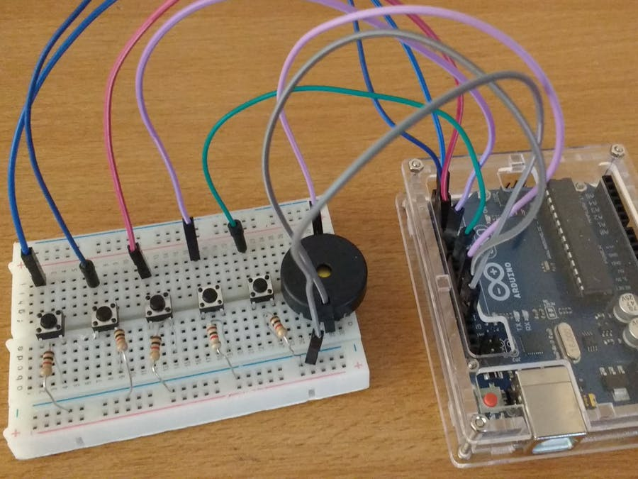

Getting popular classes can be a pain sometimes, because they tend to fill up very quickly. And if the student isn't ready to pounce the moment a spot opens up, the spot gets taken. To alleviate this issue, I wrote a Python script using Selenium that emails you when a class is open. You can take a look at the code here .
Music is really cool. For my "pianduino" project, I, with a couple other team members, decided to use an Arduino, tactile push-bottons, and a bunch of C code to create an electronic piano. The piano would be able to record what you just playedy, and then upon the press of the "play back" button, play it back to you. My responsbilitity for this team project was to write the software. This C code had to handle how long the button was pressed, which button (music note) it was, playing the notes to the speaker, among other things. It was a fun project to build! You can take a look at the code here .